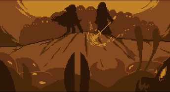

Undertale é um jogo lançado em 2015
para computadores, mais tarde sendo
lançado para PlayStation, Xbox e
Nintendo Switch


Há muito tempo, humanos e monstros viviam em paz na Terra, mas uma guerra entre as duas raças resultou na vitória dos humanos. Eles confinaram os monstros no subterrâneo do Monte Ebott, onde uma barreira mágica os prendeu. Apenas o poder de sete almas humanas poderia romper essa barreira. Muitos anos depois, em 201X, uma criança humana escalou o Monte Ebott por razões desconhecidas e acabou caindo no subterrâneo, onde os monstros ainda residem.

O objetivo do projeto (Undetale em JS) é trazer uma versão jogável o mais fiel possivel, no estilo Text Based Game, onde é possível joga-lo no console do Node.js
O link do projeto está disponivel para download no GitHub !